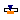
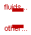

All models with dynamic equations provide initialisation support. Set the initOpt parameter to the appropriate value:
| Name | Description |
|---|---|
| Thermal and mechanical properties of materials | |
| Thermal port for lumped parameter heat transfer | |
| Thermal port for lumped parameter heat transfer with outgoing heat transfer coefficient | |
| Thermal port for lumped parameter heat transfer with incoming heat transfer coefficient | |
| DHT | Distributed Heat Terminal |
| DHThtc | Distributed Heat Terminal with heat transfer coefficient output |
| DHThtc_in | Distributed Heat Terminal with heat transfer coefficient input |
| HThtc_HT | HThtc to HT adaptor |
| DHThtc_DHT | DHThtc to DHT adapter |
| HT_DHT | HT to DHT adaptor |
| HThtc_DHThtc | HThtc to DHThtc adaptor |
| ConvHTLumped | Lumped parameter convective heat transfer |
| ConvHTLumped_htc | Lumped parameter convective heat transfer between a HT and a HThtc |
| ConvHT | 1D Convective heat transfer |
| ConvHT2N | 1D Convective heat transfer between two DHT connectors with a different number of nodes |
| ConvHT_htc | 1D Convective heat transfer between a DHT and a DHT_htc |
| CounterCurrent | Counter-current heat transfer adaptor for 1D heat transfer |
| Same heat flow through two different surfaces | |
|  HeatSource1D | Distributed Heat Flow Source |
| TempSource1D | Distributed Temperature Source |
| TempSource1Dlin | Linearly Distributed Temperature Source |
| Distributed Heat Flow Source | |
| MetalTube | Cylindrical metal tube - 1 radial node and N axial nodes |
| MetalWall | Generic metal wall - 1 radial node and N axial nodes |
| CylinderFourier | Thermal model of a hollow cylinder by Fourier's equation - 1 axial node and Nr radial nodes |
| Extended linspace handling also the N=1 case |
 ThermoPower.Thermal.HT
ThermoPower.Thermal.HT
| Type | Name | Description |
|---|---|---|
| Temperature | T | Port temperature [K] |
| flow HeatFlowRate | Q_flow | Heat flow rate (positive if flowing from outside into the component) [W] |
connector HT = Modelica.Thermal.HeatTransfer.Interfaces.HeatPort_a "Thermal port for lumped parameter heat transfer";
ThermoPower.Thermal.HThtc
| Type | Name | Description |
|---|---|---|
| Temperature | T | Port temperature [K] |
| flow HeatFlowRate | Q_flow | Heat flow rate (positive if flowing from outside into the component) [W] |
| ThermalConductance | G | Thermal conductance [W/K] |
connector HThtc "Thermal port for lumped parameter heat transfer with outgoing heat transfer coefficient" extends HT; output ThermalConductance G "Thermal conductance"; end HThtc;
ThermoPower.Thermal.HThtc_in
| Type | Name | Description |
|---|---|---|
| Temperature | T | Port temperature [K] |
| flow HeatFlowRate | Q_flow | Heat flow rate (positive if flowing from outside into the component) [W] |
| ThermalConductance | G | Thermal conductance [W/K] |
connector HThtc_in "Thermal port for lumped parameter heat transfer with incoming heat transfer coefficient" extends HT; input ThermalConductance G "Thermal conductance"; end HThtc_in;
| Type | Name | Default | Description |
|---|---|---|---|
| Integer | N | 2 | Number of nodes |
| Type | Name | Description |
|---|---|---|
| Integer | N | Number of nodes |
| AbsoluteTemperature | T[N] | Temperature at the nodes [K] |
| flow HeatFlux | phi[N] | Heat flux at the nodes [W/m2] |
connector DHT "Distributed Heat Terminal" parameter Integer N(min=1)=2 "Number of nodes"; AbsoluteTemperature T[N] "Temperature at the nodes"; flow HeatFlux phi[N] "Heat flux at the nodes"; end DHT;
| Type | Name | Default | Description |
|---|---|---|---|
| Integer | N | 2 | Number of nodes |
| Type | Name | Description |
|---|---|---|
| Integer | N | Number of nodes |
| AbsoluteTemperature | T[N] | Temperature at the nodes [K] |
| flow HeatFlux | phi[N] | Heat flux at the nodes [W/m2] |
| CoefficientOfHeatTransfer | gamma[N] | Heat transfer coefficient [W/(m2.K)] |
connector DHThtc "Distributed Heat Terminal with heat transfer coefficient output" extends DHT; output CoefficientOfHeatTransfer gamma[N] "Heat transfer coefficient"; end DHThtc;
| Type | Name | Default | Description |
|---|---|---|---|
| Integer | N | 2 | Number of nodes |
| Type | Name | Description |
|---|---|---|
| Integer | N | Number of nodes |
| AbsoluteTemperature | T[N] | Temperature at the nodes [K] |
| flow HeatFlux | phi[N] | Heat flux at the nodes [W/m2] |
| CoefficientOfHeatTransfer | gamma[N] | Heat transfer coefficient [W/(m2.K)] |
connector DHThtc_in "Distributed Heat Terminal with heat transfer coefficient input" extends DHT; input CoefficientOfHeatTransfer gamma[N] "Heat transfer coefficient"; end DHThtc_in;
| Type | Name | Description |
|---|---|---|
| HT | HT_port | |
| HThtc_in | HThtc_port |
model HThtc_HT "HThtc to HT adaptor" HT HT_port; HThtc_in HThtc_port; equation HT_port.T = HThtc_port.T; HT_port.Q_flow = HThtc_port.Q_flow; end HThtc_HT;
| Type | Name | Default | Description |
|---|---|---|---|
| Integer | N | 2 | Number of nodes |
| Type | Name | Description |
|---|---|---|
| DHT | DHT_port | |
| DHThtc_in | DHThtc_port |
model DHThtc_DHT "DHThtc to DHT adapter"
DHT DHT_port(N=N);
DHThtc_in DHThtc_port(
N=N);
parameter Integer N(min=1)=2 "Number of nodes";
equation
DHT_port.T = DHThtc_port.T;
DHT_port.phi + DHThtc_port.phi = zeros(N);
end DHThtc_DHT;
| Type | Name | Default | Description |
|---|---|---|---|
| Integer | N | 1 | Number of nodes on DHT side |
| Area | exchangeSurface | Area of heat transfer surface [m2] |
| Type | Name | Description |
|---|---|---|
| HT | HT_port | |
| DHT | DHT_port |
model HT_DHT "HT to DHT adaptor"
parameter Integer N = 1 "Number of nodes on DHT side";
parameter Area exchangeSurface "Area of heat transfer surface";
HT HT_port;
DHT DHT_port(N=N);
equation
for i in 1:N loop
DHT_port.T[i] = HT_port.T "Uniform temperature distribution on DHT side";
end for;
if N == 1 then
// Uniform flow distribution
DHT_port.phi[1]*exchangeSurface + HT_port.Q_flow = 0 "Energy balance";
else
// Piecewise linear flow distribution
sum(DHT_port.phi[1:N-1]+DHT_port.phi[2:N])/2*exchangeSurface/(N-1) + HT_port.Q_flow = 0
"Energy balance";
end if;
end HT_DHT;
| Type | Name | Default | Description |
|---|---|---|---|
| Integer | N | 1 | Number of nodes on DHT side |
| Area | exchangeSurface | Heat exchange surface [m2] |
| Type | Name | Description |
|---|---|---|
| HThtc_in | HT_port | |
| DHThtc | DHT_port |
model HThtc_DHThtc "HThtc to DHThtc adaptor"
parameter Integer N = 1 "Number of nodes on DHT side";
parameter Area exchangeSurface "Heat exchange surface";
HThtc_in HT_port;
DHThtc DHT_port(final N=1);
equation
for i in 1:N loop
DHT_port.T[i] = HT_port.T "Uniform temperature distribution on DHT side";
DHT_port.gamma[i] = HT_port.G/exchangeSurface
"Uniform h.t.c. distribution on DHT side";
end for;
sum(DHT_port.phi)*exchangeSurface/N +HT_port.Q_flow = 0 "Energy balance";
end HThtc_DHThtc;
Model of a simple convective heat transfer mechanism between two lumped parameter objects, with a constant heat transfer coefficient.
| Type | Name | Default | Description |
|---|---|---|---|
| ThermalConductance | G | Constant thermal conductance [W/K] |
| Type | Name | Description |
|---|---|---|
| HT | side1 | |
| HT | side2 |
model ConvHTLumped "Lumped parameter convective heat transfer" extends Icons.HeatFlow; parameter ThermalConductance G "Constant thermal conductance"; HT side1; HT side2; equation side1.Q_flow = G*(side1.T - side2.T) "Convective heat transfer"; side1.Q_flow = - side2.Q_flow "Energy balance"; end ConvHTLumped;

Model of a simple convective heat transfer mechanism between two lumped parameter objects. The heat transfer coefficient is supplied by the fluidside connector.
| Type | Name | Description |
|---|---|---|
| HT | otherside | |
| HThtc_in | fluidside |
model ConvHTLumped_htc
"Lumped parameter convective heat transfer between a HT and a HThtc"
extends Icons.HeatFlow;
HT otherside;
HThtc_in fluidside;
equation
fluidside.Q_flow = fluidside.G*(fluidside.T - otherside.T)
"Convective heat transfer";
fluidside.Q_flow + otherside.Q_flow = 0 "Energy balance";
end ConvHTLumped_htc;
Model of a simple convective heat transfer mechanism between two 1D objects, with a constant heat transfer coefficient.
Node j on side 1 interacts with node j on side 2.
| Type | Name | Default | Description |
|---|---|---|---|
| Integer | N | 2 | Number of Nodes |
| CoefficientOfHeatTransfer | gamma | Constant heat transfer coefficient [W/(m2.K)] | |
| Initialisation | |||
| Temperature | Tstart11 | 300 | Temperature start value - side 1 node 1 [K] |
| Temperature | Tstart1N | 300 | Temperature start value - side 1 node N [K] |
| Temperature | Tstart1[N] | ThermoPower.Thermal.linspace... | Start value of temperature vector - side 1 (initialized by default) [K] |
| Temperature | Tstart21 | 300 | Temperature start value - side 2 node 1 [K] |
| Temperature | Tstart2N | 300 | Temperature start value - side 2 node N [K] |
| Temperature | Tstart2[N] | ThermoPower.Thermal.linspace... | Start value of temperature vector - side 2 (initialized by default) [K] |
| Type | Name | Description |
|---|---|---|
| DHT | side1 | |
| DHT | side2 |
model ConvHT "1D Convective heat transfer"
extends Icons.HeatFlow;
parameter Integer N=2 "Number of Nodes";
parameter CoefficientOfHeatTransfer gamma
"Constant heat transfer coefficient";
parameter Temperature Tstart11=300 "Temperature start value - side 1 node 1";
parameter Temperature Tstart1N=300 "Temperature start value - side 1 node N";
parameter Temperature Tstart1[N] = ThermoPower.Thermal.linspaceExt(Tstart11,Tstart1N,N)
"Start value of temperature vector - side 1 (initialized by default)";
parameter Temperature Tstart21=300 "Temperature start value - side 2 node 1";
parameter Temperature Tstart2N=300 "Temperature start value - side 2 node N";
parameter Temperature Tstart2[N] = ThermoPower.Thermal.linspaceExt(Tstart21,Tstart2N,N)
"Start value of temperature vector - side 2 (initialized by default)";
DHT side1(N=N, T(start=Tstart1));
DHT side2(N=N, T(start=Tstart2));
equation
side1.phi = gamma*(side1.T - side2.T) "Convective heat transfer";
side1.phi = - side2.phi "Energy balance";
end ConvHT;
Model of a simple convective heat transfer mechanism between two 1D objects having (possibly) different nodes, with a constant heat transfer coefficient.
The heat flux through each node of side with a larger number of nodes is computed as a function of the difference between the node temperatures and the corresponding temperatures on the other side, obtained by linear interpolation.
The corresponding heat flux on the side with fewer nodes is computed so that the averaged heat flux around those nodes is equal to the averaged heat flux on the corresponding intervals on the other side.
| Type | Name | Default | Description |
|---|---|---|---|
| Integer | N1 | 2 | Number of nodes on side 1 |
| Integer | N2 | 2 | Number of nodes on side 2 |
| CoefficientOfHeatTransfer | gamma | Constant heat transfer coefficient [W/(m2.K)] | |
| Initialisation | |||
| Temperature | Tstart11 | 300 | Temperature start value - side 1 node 1 [K] |
| Temperature | Tstart1N | 300 | Temperature start value - side 1 node N [K] |
| Temperature | Tstart1[N1] | ThermoPower.Thermal.linspace... | Start value of temperature vector - side 1 (initialized by default) [K] |
| Temperature | Tstart21 | 300 | Temperature start value - side 2 node 1 [K] |
| Temperature | Tstart2N | 300 | Temperature start value - side 2 node N [K] |
| Temperature | Tstart2[N2] | ThermoPower.Thermal.linspace... | Start value of temperature vector - side 2 (initialized by default) [K] |
| Type | Name | Description |
|---|---|---|
| DHT | side1 | |
| DHT | side2 |
model ConvHT2N
"1D Convective heat transfer between two DHT connectors with a different number of nodes"
extends Icons.HeatFlow;
parameter Integer N1(min=1)=2 "Number of nodes on side 1";
parameter Integer N2(min=1)=2 "Number of nodes on side 2";
parameter CoefficientOfHeatTransfer gamma
"Constant heat transfer coefficient";
parameter Temperature Tstart11=300 "Temperature start value - side 1 node 1";
parameter Temperature Tstart1N=300 "Temperature start value - side 1 node N";
parameter Temperature Tstart1[N1] = ThermoPower.Thermal.linspaceExt(Tstart11,Tstart1N,N1)
"Start value of temperature vector - side 1 (initialized by default)";
parameter Temperature Tstart21=300 "Temperature start value - side 2 node 1";
parameter Temperature Tstart2N=300 "Temperature start value - side 2 node N";
parameter Temperature Tstart2[N2] = ThermoPower.Thermal.linspaceExt(Tstart21,Tstart2N,N2)
"Start value of temperature vector - side 2 (initialized by default)";
DHT side1(N=N1, T(start=Tstart1));
DHT side2(N=N2, T(start=Tstart2));
protected
Real G1[N2, N1] "Temperature weight matrix - side 1";
Real G2[N1, N2] "Temperature weight matrix - side 2";
Real H1[min(N1,N2), N1] "Heat flux weight matrix - side 1";
Real H2[min(N1,N2), N2] "Heat flux weight matrix - side 2";
function compHm "Computes matrix H - side with more nodes"
input Integer Nm "Number of nodes on the side with more nodes";
input Integer Nf "Number of nodes on the side with fewer nodes";
output Real H[Nf,Nm] "Temperature weight matrix";
algorithm
H:=zeros(Nf, Nm);
// Flux on the first semi-cell, few nodes side
H[1,:] := fluxWeights(Nm, 0, 0.5/(Nf-1));
// Flux on the central cells, few nodes side
for i in 2:Nf-1 loop
H[i,:] := fluxWeights(Nm, (i-1.5)/(Nf-1),(i-0.5)/(Nf-1));
end for;
// Flux on the last semi-cell, few nodes side
H[Nf,:] := fluxWeights(Nm, 1-0.5/(Nf-1), 1);
end compHm;
function fluxWeights "Returns the vector of the weights of the nodal fluxes
(more nodes side) corresponding to the given boundaries"
input Integer Nm "Number of nodes on the side with more nodes";
input Real lb "Left boundary, normalised";
input Real rb "Right boundary, normalised";
output Real v[Nm] "Flux weight vector";
protected
Integer lbi "Index of the leftmost involved node";
Integer rbi "Index of the rightmost involved node";
Real h "Width of the inner cells";
Real hl "Width of the leftmost cell";
Real hr "Width of the rightmost cell";
algorithm
v:=zeros(Nm);
// Index of the rightmost and leftmost involved nodes
lbi :=1 + integer(floor(lb*(Nm - 1) - 1e-6));
rbi :=1 + integer(ceil(rb*(Nm - 1) + 1e-6));
// Width of the inner, leftmost and rightmost cells
h := 1/(Nm-1);
hl := lbi*h - lb;
hr := rb - (rbi - 2)*h;
// Coefficients of the contribution of the leftmost partial cell flow
if abs(hl) > 1e-6 then
v[lbi] := (hl/h)/2*hl;
v[lbi+1] := ((h-hl)/h+1)/2*hl;
end if;
// Coefficients of the contribution of the rightmost partial cell flow
if abs(hr) > 1e-6 then
v[rbi-1] := (1+(h-hr)/h)/2*hr;
v[rbi] := (hr/h)/2*hr;
end if;
// Coefficients of the additional contributions of the internal cells
for i in lbi+1:rbi-2 loop
v[i] := v[i] + h/2;
v[i+1] := v[i+1] + h/2;
end for;
// Coefficients are scaled to get the average flux from the flow
v := v/(rb-lb);
end fluxWeights;
function compHf "Computes matrix H - side with fewer nodes"
input Integer Nf "Number of nodes on the side with fewer nodes";
output Real H[Nf,Nf] "Heat flux weight matrix";
algorithm
H := zeros(Nf,Nf);
// Flux on the first semi-cell is average(phi[1],average(phi[1],phi[2]))
H[1,1:2]:={3/4, 1/4};
// Flux on the central cells is the average between the flux on the left
// semi-cell average(average(phi[i-1],phi[i]),phi[i]) and the flux on the right
// semi-cell average(phi[i],average(phi[i],phi[i+1]))
for i in 2:Nf-1 loop
H[i, i-1:i+1] := {1/8, 3/4, 1/8};
end for;
// Flux on the last semi-cell is average(average(phi[Nf-1],phi[Nf]), phi[Nf])
H[Nf,Nf-1:Nf]:={1/4, 3/4};
end compHf;
function compG "Computes matrix G"
input Integer Nm "Number of nodes on the side with more nodes";
input Integer Nf "Number of nodes on the side with fewer nodes";
output Real G[Nm,Nf] "Temperature weight matrix";
protected
Integer firstNode
"Number of the left corresponding node on the side with fewer nodes";
Integer lastNode
"Number of the right corresponding node on the side with fewer nodes";
Real w "Temperature weight of the left corresponding node ";
algorithm
G := zeros(Nm,Nf);
G[1,1] := 1 "Temperature of first node";
G[Nm, Nf] := 1 "Temperature of last node";
// Temperature of internal nodes by interpolation
for i in 2:Nm-1 loop
firstNode := 1+div((Nf-1)*(i-1), Nm-1);
lastNode := 1+firstNode;
w :=1 - mod((Nf - 1)*(i - 1), Nm - 1)/(Nm - 1);
G[i, firstNode] := w;
G[i, lastNode] := 1 - w;
end for;
end compG;
function compG1 "Computes matrix G1"
input Integer N1;
input Integer N2;
output Real G1[N2,N1];
algorithm
G1 := if N1 == N2 then identity(N1) else
if N1 > N2 then zeros(N2,N1) else
compG(max(N1,N2),min(N1,N2));
end compG1;
function compG2 "Computes matrix G2"
input Integer N1;
input Integer N2;
output Real G2[N1,N2];
algorithm
G2 := if N1 == N2 then identity(N1) else
if N1 > N2 then compG(max(N1,N2),min(N1,N2)) else
zeros(N1,N2);
end compG2;
function compH1 "Computes matrix H1"
input Integer N1;
input Integer N2;
output Real H1[min(N1,N2),N1];
algorithm
H1 := if N1 == N2 then identity(N1) else
if N1 > N2 then compHm(max(N1,N2),min(N1,N2)) else
compHf(min(N1,N2));
end compH1;
function compH2 "Computes matrix H2"
input Integer N1;
input Integer N2;
output Real H2[min(N1,N2),N2];
algorithm
H2 := if N1 == N2 then identity(N2) else
if N1 > N2 then compHf(min(N1,N2)) else
compHm(max(N1,N2), min(N1,N2));
end compH2;
equation
// Compute weight matrices
G1 = compG1(N1,N2);
G2 = compG2(N1,N2);
H1 = compH1(N1,N2);
H2 = compH2(N1,N2);
H1*side1.phi+H2*side2.phi = zeros(min(N1,N2)) "Energy balance";
if N1 >= N2 then
side1.phi = gamma*(side1.T - G2*side2.T) "Convective heat transfer";
else
side2.phi = gamma*(side2.T - G1*side1.T) "Convective heat transfer";
end if;
end ConvHT2N;
Model of a simple convective heat transfer mechanism between two 1D objects. The heat transfer coefficient is supplied by the fluid-side extended connector.
Node j on the fluid side interacts with node j on the other side.
| Type | Name | Default | Description |
|---|---|---|---|
| Integer | N | 2 | Number of Nodes |
| Initialisation | |||
| Temperature | TstartF1 | 300 | Temperature start value - fluid side node 1 [K] |
| Temperature | TstartFN | 300 | Temperature start value - fluid side node N [K] |
| Temperature | TstartF[N] | ThermoPower.Thermal.linspace... | Start value of temperature vector - fluid side (initialized by default) [K] |
| Temperature | TstartO1 | 300 | Temperature start value - other side node 1 [K] |
| Temperature | TstartON | 300 | Temperature start value - other side node N [K] |
| Temperature | TstartO[N] | ThermoPower.Thermal.linspace... | Start value of temperature vector - other side (initialized by default) [K] |
| Type | Name | Description |
|---|---|---|
| DHT | otherside | |
| DHThtc_in | fluidside |
model ConvHT_htc
"1D Convective heat transfer between a DHT and a DHT_htc"
extends Icons.HeatFlow;
parameter Integer N=2 "Number of Nodes";
parameter Temperature TstartF1=300
"Temperature start value - fluid side node 1";
parameter Temperature TstartFN=300
"Temperature start value - fluid side node N";
parameter Temperature TstartF[N] = ThermoPower.Thermal.linspaceExt(TstartF1,TstartFN,N)
"Start value of temperature vector - fluid side (initialized by default)";
parameter Temperature TstartO1=300
"Temperature start value - other side node 1";
parameter Temperature TstartON=300
"Temperature start value - other side node N";
parameter Temperature TstartO[N] = ThermoPower.Thermal.linspaceExt(TstartO1,TstartON,N)
"Start value of temperature vector - other side (initialized by default)";
DHT otherside( N=N, T(start=TstartF));
DHThtc_in fluidside( N=N, T(start=TstartO));
equation
for j in 1:N loop
fluidside.phi[j] = fluidside.gamma[j]*(fluidside.T[j] - otherside.T[j])
"Convective heat transfer";
otherside.phi[j] = - fluidside.phi[j] "Energy balance";
end for;
end ConvHT_htc;
This component can be used to model counter-current heat transfer. The temperature and flux vectors on one side are swapped with respect to the other side. This means that the temperature of node j on side 1 is equal to the temperature of note N-j+1 on side 2; heat fluxes behave correspondingly.
The swapping is performed if the counterCurrent parameter is true (default value).
| Type | Name | Default | Description |
|---|---|---|---|
| Integer | N | 2 | Number of Nodes |
| Boolean | counterCurrent | true | Swap temperature and flux vector order |
| Type | Name | Description |
|---|---|---|
| DHT | side1 | |
| DHT | side2 |
model CounterCurrent
"Counter-current heat transfer adaptor for 1D heat transfer"
extends Icons.HeatFlow;
parameter Integer N=2 "Number of Nodes";
parameter Boolean counterCurrent = true
"Swap temperature and flux vector order";
Thermal.DHT side1(N=N);
Thermal.DHT side2(N=N);
equation
// Swap temperature and flux vector order
if counterCurrent then
side1.phi = - side2.phi[N:-1:1];
side1.T = side2.T[N:-1:1];
else
side1.phi = - side2.phi;
side1.T = side2.T;
end if;
end CounterCurrent;
This model can be used to describe the heat flow through two different surfaces, having a different area; the total heat flow entering on the internal side is equal to the total heat flow going out of the external side.
| Type | Name | Default | Description |
|---|---|---|---|
| Integer | N | 2 | Number of nodes |
| Area | A1 | Side 1 surface area [m2] | |
| Area | A2 | Side 2 surface area [m2] |
| Type | Name | Description |
|---|---|---|
| DHT | side1 | Area of side 1 surface |
| DHT | side2 | Area of side 2 surface |
model HeatFlowDistribution "Same heat flow through two different surfaces" extends Icons.HeatFlow; parameter Integer N(min=1)=2 "Number of nodes"; parameter Area A1 "Side 1 surface area"; parameter Area A2 "Side 2 surface area"; DHT side1(N=N) "Area of side 1 surface"; DHT side2(N=N) "Area of side 2 surface"; equation side1.T = side2.T "Same temperature"; side1.phi * A1 + side2.phi * A2 = zeros(N) "Energy balance"; end HeatFlowDistribution;
 ThermoPower.Thermal.HeatSource1D
ThermoPower.Thermal.HeatSource1D

Model of an ideal tubular heat flow source, with uniform heat flux. The actual heating power is provided by the power signal connector.
| Type | Name | Default | Description |
|---|---|---|---|
| Integer | N | 2 | Number of nodes |
| Integer | Nt | 1 | Number of tubes |
| Length | L | Source length [m] | |
| Length | omega | Source perimeter (single tube) [m] | |
| DHT | wall | redeclare Thermal.DHT wall(N... |
| Type | Name | Description |
|---|---|---|
| DHT | wall | |
| input RealInput | power |
model HeatSource1D "Distributed Heat Flow Source"
extends Icons.HeatFlow;
parameter Integer N=2 "Number of nodes";
parameter Integer Nt=1 "Number of tubes";
parameter Length L "Source length";
parameter Length omega "Source perimeter (single tube)";
replaceable Thermal.DHT wall(N=N);
Modelica.Blocks.Interfaces.RealInput power;
equation
for i in 1:N loop
wall.phi[i] = -power/(omega*L*Nt);
end for;
end HeatSource1D;
ThermoPower.Thermal.TempSource1D
Model of an ideal 1D uniform temperature source. The actual temperature is provided by the temperature signal connector.
| Type | Name | Default | Description |
|---|---|---|---|
| Integer | N | 2 | Number of nodes |
| DHT | wall | redeclare Thermal.DHT wall(N... |
| Type | Name | Description |
|---|---|---|
| DHT | wall | |
| input RealInput | temperature |
model TempSource1D "Distributed Temperature Source"
extends Icons.HeatFlow;
parameter Integer N=2 "Number of nodes";
replaceable Thermal.DHT wall(N=N);
Modelica.Blocks.Interfaces.RealInput temperature;
equation
for i in 1:N loop
wall.T[i] = temperature;
end for;
end TempSource1D;
Model of an ideal 1D temperature source with a linear distribution. The values of the temperature at the two ends of the source are provided by the temperature_node1 and temperature_nodeN signal connectors.
| Type | Name | Default | Description |
|---|---|---|---|
| Integer | N | 2 | Number of nodes |
| DHT | wall | redeclare Thermal.DHT wall(N... |
| Type | Name | Description |
|---|---|---|
| DHT | wall | |
| input RealInput | temperature_node1 | |
| input RealInput | temperature_nodeN |
model TempSource1Dlin "Linearly Distributed Temperature Source" extends Icons.HeatFlow; parameter Integer N=2 "Number of nodes"; replaceable Thermal.DHT wall(N=N); Modelica.Blocks.Interfaces.RealInput temperature_node1; Modelica.Blocks.Interfaces.RealInput temperature_nodeN; equation wall.T = linspace(temperature_node1,temperature_nodeN,N); end TempSource1Dlin;
 ThermoPower.Thermal.HeatSource1Dhtc
ThermoPower.Thermal.HeatSource1Dhtc
| Type | Name | Default | Description |
|---|---|---|---|
| Integer | N | 2 | Number of nodes |
| Integer | Nt | 1 | Number of tubes |
| Length | L | Source length [m] | |
| Length | omega | Source perimeter (single tube) [m] |
| Type | Name | Description |
|---|---|---|
| input RealInput | power |
model HeatSource1Dhtc "Distributed Heat Flow Source" extends HeatSource1D(redeclare Thermal.DHThtc_in wall); end HeatSource1Dhtc;

This is the model of a cylindrical tube of solid material.
The heat capacity (which is lumped at the center of the tube thickness) is accounted for, as well as the thermal resistance due to the finite heat conduction coefficient. Longitudinal heat conduction is neglected.
Modelling options
The following options are available:
| Type | Name | Default | Description |
|---|---|---|---|
| Integer | N | 2 | Number of nodes |
| Length | L | Tube length [m] | |
| Length | rint | Internal radius (single tube) [m] | |
| Length | rext | External radius (single tube) [m] | |
| Real | rhomcm | Metal heat capacity per unit volume [J/m^3.K] | |
| ThermalConductivity | lambda | Thermal conductivity [W/(m.K)] | |
| Boolean | WallRes | true | Wall conduction resistance accounted for |
| Initialisation | |||
| Temperature | Tstart1 | 300 | Temperature start value - first node [K] |
| Temperature | TstartN | 300 | Temperature start value - last node [K] |
| Temperature | Tstart[N] | ThermoPower.Thermal.linspace... | Start value of temperature vector (initialized by default) [K] |
| Temp | initOpt | Choices.Init.Options.noInit | Initialisation option |
| Type | Name | Description |
|---|---|---|
| DHT | int | Internal surface |
| DHT | ext | External surface |
model MetalTube
"Cylindrical metal tube - 1 radial node and N axial nodes"
extends Icons.MetalWall;
parameter Integer N(min=1)=2 "Number of nodes";
parameter Length L "Tube length";
parameter Length rint "Internal radius (single tube)";
parameter Length rext "External radius (single tube)";
parameter Real rhomcm "Metal heat capacity per unit volume [J/m^3.K]";
parameter ThermalConductivity lambda "Thermal conductivity";
parameter Boolean WallRes=true "Wall conduction resistance accounted for";
parameter Temperature Tstart1=300 "Temperature start value - first node";
parameter Temperature TstartN=300 "Temperature start value - last node";
parameter Temperature Tstart[N] = ThermoPower.Thermal.linspaceExt(Tstart1,TstartN,N)
"Start value of temperature vector (initialized by default)";
parameter Choices.Init.Options.Temp initOpt=Choices.Init.Options.noInit
"Initialisation option";
constant Real pi=Modelica.Constants.pi;
AbsoluteTemperature T[N](start=Tstart) "Node temperatures";
Area Am "Area of the metal tube cross-section";
DHT int(N=N, T(start = Tstart)) "Internal surface";
DHT ext(N=N, T(start = Tstart)) "External surface";
equation
assert(rext > rint, "External radius must be greater than internal radius");
Am = (rext^2 - rint^2)*pi "Area of the metal cross section";
rhomcm*Am*der(T) = rint*2*pi*int.phi + rext*2*pi*ext.phi "Energy balance";
if WallRes then
int.phi = lambda/(rint*log((rint + rext)/(2*rint)))*(int.T - T)
"Heat conduction through the internal half-thickness";
ext.phi = lambda/(rext*log((2*rext)/(rint + rext)))*(ext.T - T)
"Heat conduction through the external half-thickness";
else
// No temperature gradients across the thickness
int.T = T;
ext.T = T;
end if;
initial equation
if initOpt == Choices.Init.Options.noInit then
// do nothing
elseif initOpt == Choices.Init.Options.steadyState then
der(T) = zeros(N);
elseif initOpt == Choices.Init.Options.steadyStateNoT then
// do nothing
else
assert(false, "Unsupported initialisation option");
end if;
end MetalTube;
This is the model of a cylindrical tube of solid material.
The heat capacity (which is lumped at the center of the tube thickness) is accounted for, as well as the thermal resistance due to the finite heat conduction coefficient. Longitudinal heat conduction is neglected.
Modelling options
The following options are available:
| Type | Name | Default | Description |
|---|---|---|---|
| Integer | N | 2 | Number of nodes |
| Mass | M | Mass [kg] | |
| Area | Sint | Internal surface [m2] | |
| Area | Sext | External surface [m2] | |
| SpecificHeatCapacity | cm | Specific heat capacity of metal [J/(kg.K)] | |
| Initialisation | |||
| Temperature | Tstart1 | 300 | Temperature start value - first node [K] |
| Temperature | TstartN | 300 | Temperature start value - last node [K] |
| Temperature | Tstart[N] | ThermoPower.Thermal.linspace... | Start value of temperature vector (initialized by default) [K] |
| Temp | initOpt | ThermoPower.Choices.Init.Opt... | Initialisation option |
| Type | Name | Description |
|---|---|---|
| DHT | int | Internal surface |
| DHT | ext | External surface |
model MetalWall
"Generic metal wall - 1 radial node and N axial nodes"
extends ThermoPower.Icons.MetalWall;
parameter Integer N(min=1)=2 "Number of nodes";
parameter Modelica.SIunits.Mass M "Mass";
parameter Modelica.SIunits.Area Sint "Internal surface";
parameter Modelica.SIunits.Area Sext "External surface";
parameter Modelica.SIunits.SpecificHeatCapacity cm
"Specific heat capacity of metal";
parameter Modelica.SIunits.Temperature Tstart1=300
"Temperature start value - first node";
parameter Modelica.SIunits.Temperature TstartN=300
"Temperature start value - last node";
parameter Modelica.SIunits.Temperature Tstart[N] = ThermoPower.Thermal.linspaceExt(Tstart1,TstartN,N)
"Start value of temperature vector (initialized by default)";
parameter ThermoPower.Choices.Init.Options.Temp initOpt=ThermoPower.Choices.Init.Options.noInit
"Initialisation option";
constant Real pi=Modelica.Constants.pi;
ThermoPower.AbsoluteTemperature T[N](start=Tstart) "Node temperatures";
ThermoPower.Thermal.DHT int(N=N, T(start=Tstart)) "Internal surface";
ThermoPower.Thermal.DHT ext(N=N, T(start=Tstart)) "External surface";
equation
(cm*M)*der(T) = Sint*int.phi + Sext*ext.phi "Energy balance";
// No temperature gradients across the thickness
int.T = T;
ext.T = T;
initial equation
if initOpt == ThermoPower.Choices.Init.Options.noInit then
// do nothing
elseif initOpt == ThermoPower.Choices.Init.Options.steadyState then
der(T) = zeros(N);
elseif initOpt == ThermoPower.Choices.Init.Options.steadyStateNoT then
// do nothing
else
assert(false, "Unsupported initialisation option");
end if;
end MetalWall;
The model is axis-symmetric, has one node in the longitudinal direction, and Nr nodes in the radial direction. The two connectors correspond to the internal and external surfaces; if one of the surface is thermally insulated, just leave the connector unconnected (no connection on a DHT connector means zero heat flux). The temperature-dependent properties of the material are described by the replaceable MaterialModel model.
Modelling options
The radial distribution of the nodes can be chosen by selecting the value of nodeDistribution:
| Type | Name | Default | Description |
|---|---|---|---|
| Integer | Nr | 2 | Number of radial nodes |
| Temp | nodeDistribution | Node distribution | |
| Length | rint | Internal radius [m] | |
| Length | rext | External radius [m] | |
| Initialisation | |||
| Temperature | Tstartint | 300 | Temperature start value at rint (first node) [K] |
| Temperature | Tstartext | 300 | Temperature start value at rext (last node) [K] |
| Temp | initOpt | Choices.Init.Options.noInit | Initialisation option |
| Type | Name | Description |
|---|---|---|
| DHT | internalBoundary | |
| DHT | externalBoundary |
model CylinderFourier
"Thermal model of a hollow cylinder by Fourier's equation - 1 axial node and Nr radial nodes"
import Modelica.SIunits.*;
import ThermoPower.Choices.CylinderFourier.NodeDistribution;
extends Icons.MetalWall;
replaceable model MaterialModel = MaterialProperties.Metals.StandardSteel extends
MaterialProperties.Interfaces.PartialMaterial "Metal model";
parameter Integer Nr=2 "Number of radial nodes";
parameter NodeDistribution.Temp nodeDistribution "Node distribution";
parameter Length rint "Internal radius";
parameter Length rext "External radius";
parameter Temperature Tstartint=300
"Temperature start value at rint (first node)";
parameter Temperature Tstartext=300
"Temperature start value at rext (last node)";
parameter Choices.Init.Options.Temp initOpt=Choices.Init.Options.noInit
"Initialisation option";
Length r[Nr](fixed=false) "Node radii";
protected
Length r1_2[Nr-1](fixed=false) "Slice mean radii";
Length r_lin[Nr](fixed=false) "Linearly distributed radii";
Real A[Nr](fixed=false);
Real B[Nr](fixed=false);
Real C[Nr](fixed=false);
public
Temperature T[Nr](start=linspace(Tstartint,Tstartext,Nr))
"Nodal temperatures";
Temperature Tm "Mean temperature";
MaterialModel metal[Nr] "Metal properties at the nodes";
ThermoPower.Thermal.DHT internalBoundary(final N=1);
ThermoPower.Thermal.DHT externalBoundary(final N=1);
equation
// Generation of the temperature node distribution
r_lin = linspace(rint,rext,Nr) "Linearly distributed node radii";
for i in 1:Nr loop
if nodeDistribution == NodeDistribution.uniform then
r[i]= r_lin[i] "Uniform distribution of node radii";
elseif nodeDistribution == NodeDistribution.thickInternal then
r[i]= rint + 1/(rext-rint)*(r_lin[i]-rint)^2
"Quadratically distributed node radii - thickest at rint";
elseif nodeDistribution == NodeDistribution.thickExternal then
r[i]= rext - 1/(rext-rint)*(rext-r_lin[i])^2
"Quadratically distributed node radii - thickest at rext";
elseif nodeDistribution == NodeDistribution.thickBoth then
if r_lin[i] <= (rint+rext)/2 then
r[i]= 2/(rext-rint)*(r_lin[i]-rint)^2+rint
"Quadratically distributed node radii - thickest at rint";
else
r[i]= -2/(rext-rint)*(r_lin[i]-rext)^2+rext
"Quadratically distributed node radii - thickest at rext";
end if;
else
assert(true,"Unsupported NodeDistribution type");
end if;
end for;
for i in 1:Nr-1 loop
r1_2[i] = (r[i+1]+r[i])/2;
end for;
// Spatially discretized coefficients of Fourier's equation
for i in 2:Nr-1 loop
A[i] = r1_2[i-1] / (r[i]*( r[i] - r[i-1])*(r1_2[i]-r1_2[i-1]));
C[i] = r1_2[i] / (r[i]*(r[i+1] - r[i]) *(r1_2[i]-r1_2[i-1]));
B[i] = - A[i] - C[i];
end for;
// Not used by Fourier equations
A[1] = 0;
B[1] = 0;
C[1] = 0;
A[Nr] = 0;
B[Nr] = 0;
C[Nr] = 0;
// Metal temperature equations
metal[1:Nr].T = T[1:Nr];
// Thermal field
for i in 2:Nr-1 loop
metal[i].density*metal[i].specificHeatCapacity/metal[i].thermalConductivity *der(T[i]) =
A[i]*T[i-1] + B[i]*T[i] + C[i]*T[i+1] "Fourier's equation";
end for;
// Thermal boundary conditions
internalBoundary.T[1] = T[1];
externalBoundary.T[1] = T[Nr];
internalBoundary.phi[1] = -metal[1].thermalConductivity*(T[2] - T[1]) /(r[2] - r[1]);
externalBoundary.phi[1] = metal[Nr].thermalConductivity*(T[Nr] - T[Nr-1])/(r[Nr] - r[Nr-1]);
// Mean temperature
Tm = 1/(rext^2-rint^2) * sum((T[i]*r[i]+T[i+1]*r[i+1])*(r[i+1]-r[i]) for i in 1:Nr-1);
// Tm = sum(T)/Nr;
initial equation
// Initial conditions
if initOpt == Choices.Init.Options.noInit then
// do nothing
elseif initOpt == Choices.Init.Options.steadyState then
der(T[2:Nr-1]) = zeros(Nr-2);
else
assert(false, "Unsupported initialisation option");
end if;
end CylinderFourier;
| Type | Name | Default | Description |
|---|---|---|---|
| Real | x1 | ||
| Real | x2 | ||
| Integer | N |
| Type | Name | Description |
|---|---|---|
| Real | vec[N] |
function linspaceExt "Extended linspace handling also the N=1 case"
input Real x1;
input Real x2;
input Integer N;
output Real vec[N];
algorithm
vec:= if N==1 then {x1} else linspace(x1,x2,N);
end linspaceExt;
replaceable model MaterialModel = MaterialProperties.Metals.StandardSteel extends MaterialProperties.Interfaces.PartialMaterial "Metal model";